Les Attelages
du Bois Rond
Si vous êtes intéressé par l'attelage, n'hésitez pas à nous contacter : c'est avec un grand plaisir que nous vous accueillerons afin de vous aider et de vous faire partager notre passion.
L'attelage
Un loisir au rythme cadencé du cheval
L'attelage est un loisir qui s'adresse à toutes les personnes qui aiment la nature et les chevaux, et permet de se délasser pour quelques heures avec toute la famille ou quelques amis. Lors de randonnées de quelques heures ou de plusieurs jours, il fait découvrir les régions et la campagne sous un angle différent.
La pratique ne demande pas de force physique, mais elle nécessite — comme l'équitation montée — de maîtriser son cheval avec subtilité et finesse. Pour pratiquer sans risque, une connaissance élémentaire de trois choses est nécessaire :
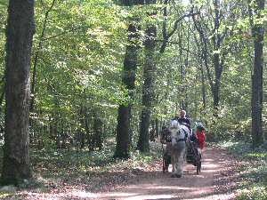
Votre premier pas
Par où commencer l'attelage ?
Trois questions, et vous savez quoi demander en appelant le club. Le message de prise de contact se prépare tout seul, prêt à être envoyé.
- 1Votre expérience avec les chevaux
- 2Ce qui vous attire dans l'attelage
- 3Avec ou sans votre propre cheval
Votre expérience
Aucun niveau n'est demandé pour venir découvrir.
Ce qui vous attire
On peut changer d'avis en route.
Votre cheval
Les deux cas sont possibles — à préciser avec le club.
Compétition
Se mesurer aux autres pour progresser
Comme le vélo ou la marche, la discipline se pratique en loisir — mais la compétition au sein d'une association sportive est importante pour progresser. En attelage, elle existe au sein de la Fédération Française d'Équitation sous plusieurs formes.
Le dressage
Une épreuve où la tradition est respectée et où l'on peut voir évoluer de beaux attelages. Elle juge, sur des figures et des allures imposées, l'impulsion, la souplesse et l'attitude.
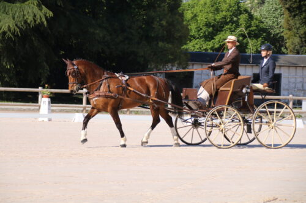
Le marathon
Une épreuve de cross très sportive, avec des passages chronométrés et spectaculaires, parcourus au trot et au pas avec une moyenne imposée — 14 km/h pour les chevaux. La dernière phase comprend des obstacles où l'attelage doit franchir des portes imposées dans le meilleur temps. C'est l'épreuve la plus spectaculaire.
Survolez ou touchez le schéma : l'attelage suit le tracé des portes A → F.
La maniabilité
Sur une carrière, un parcours sinueux est dessiné entre des portes matérialisées par des cônes. Le but : tester l'habileté du meneur, qui doit exécuter ce circuit le plus rapidement possible sans toucher les cônes.
Le TREC attelé
Les techniques de randonnée équestre : des compétitions qui permettent de parcourir un circuit d'orientation et de franchir des passages techniques, afin de noter la maîtrise de son attelage.
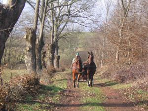
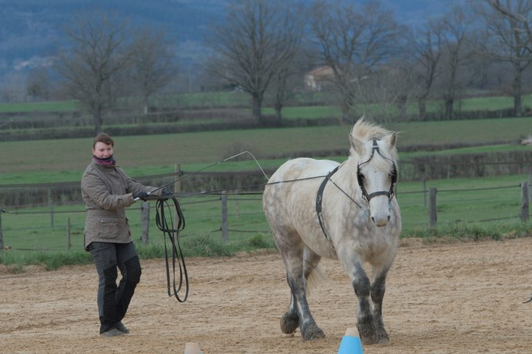
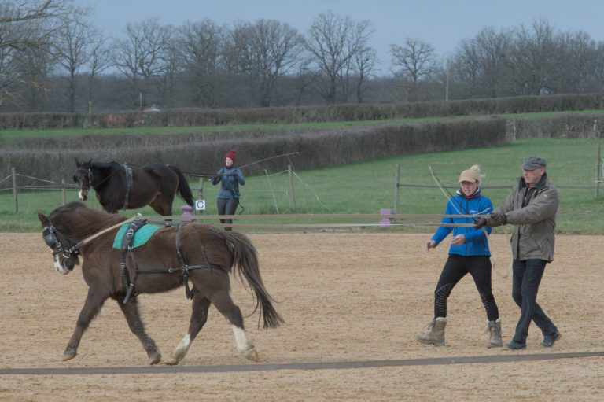
Longues rênesFormation
Apprendre avec une monitrice d'équitation
La formation est assurée par Martine Vernay, monitrice d'équitation.
Au programme notamment : le travail aux longues rênes, première étape pour préparer un cheval et comprendre la conduite avant de monter sur la voiture.
Détail des formules, horaires et tarifs : à compléter avec le club
Association
Des passionnés réunis depuis 1993
Créée en 1993 afin de regrouper localement les passionnés d'attelage, cette association loi 1901 a pour but de favoriser la pratique de l'attelage sous toutes ses formes, d'aider ses membres à le pratiquer et d'assurer la conservation des métiers anciens liés au cheval.
Affiliée à la Fédération Française d'Équitation depuis 1999, elle compte environ 50 membres licenciés et est présente, par l'intermédiaire de ses membres, en concours régionaux, nationaux et internationaux.
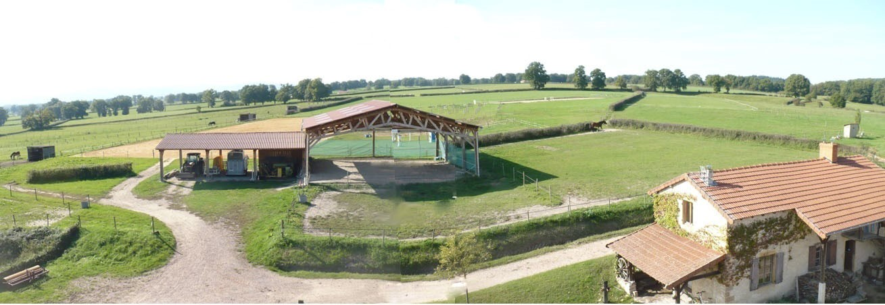
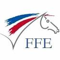
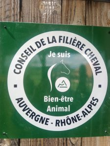
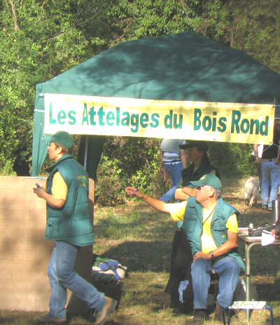
En images
La vie au Bois Rond
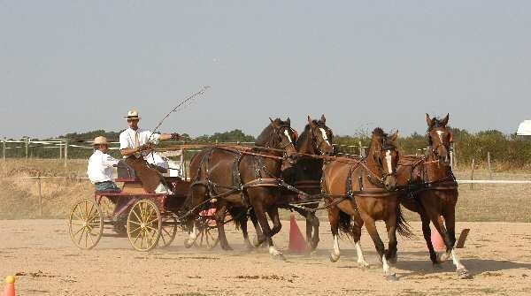
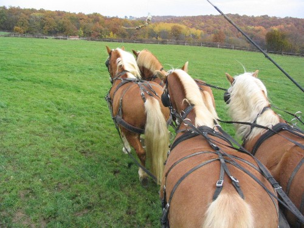
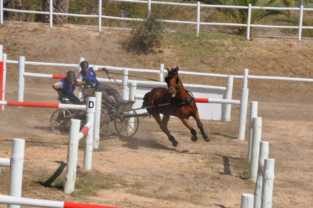
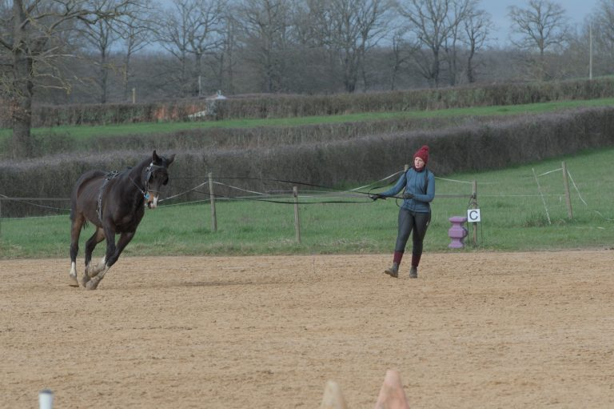
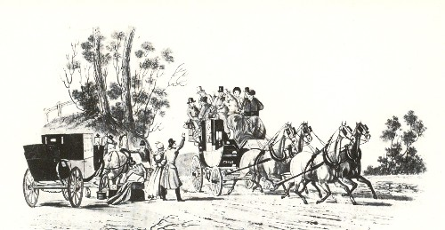
Contact
Venez nous rencontrer au Bois Rond
- Adresse
- 1003 route de Vivans, Bois Rond
42640 Noailly - Téléphone
- 06 14 99 24 41
- attelagesduboisrond@gmail.com
- Horaires d'accueil
- à fournir par le club
- Calendrier des concours et journées
- à alimenter par le club